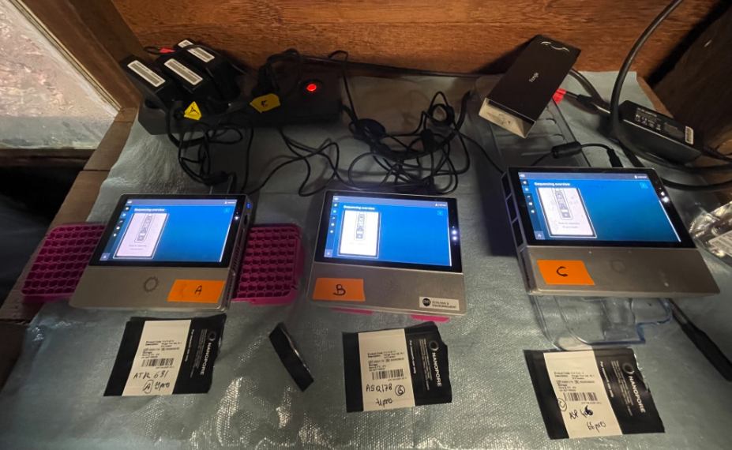

Genbarque_G2_experience
L’école thématique “Genbarque Guyane” du CEBA se focalisera sur l’analyse de la biodiversité par des approches de métagénomique, plus spécifiquement sur l’utilisation des approches de séquençage de troisième génération incluant l’analyse bioinformatique. Le volet expérimental à la station de recherche des Nouragues couvre les aspects de génétique moléculaire allant de l’extraction de l’ADN ou ARN à la construction de banques et séquençage sur flongle.
[!CAUTION] Porter des gants et une blouse
[!CAUTION] Jeter les déchets liquides dans un récipient clairement étiqueté
[!CAUTION] Jeter les cônes dans un récipient clairement étiqueté
[!TIP] Marquer à l’avance les tubes et les colonnes sur le côté du tube avec un marqueur ** résistant à l’alcool **
[!TIP] Réaliser les extractions par lots d’échantillons en nombre compatible avec la centrifugeuse utilisée
[!CAUTION] Prélever une quantité des différentes tampons utilisés avec les kits d’extraction et mettre en tubes 5 mL. Prélever une quantité nécessaire des tampons qui soit compatible avec le nombre d’échantillons à traiter. Conserver ces tubes pour différentes séances d’extraction sauf si contamination.
[!TIP] Rédiger une fiche d’extraction (correspondance identifiant d’échantillon et identifiant de l’extraction)
bloc-chauffant (56°C), centrifugeuse, portoirs, Qubit, électrophorèse, pipettes, tubes 1.5 et/ou 2 mL, pilons de broyage, vortex avec adaptateur pour broyage à billes ou broyeur à billes.
Rappel pour calcul des dilutions : C1V1=C2V2 et donc V2=(C1V1)/C2
Le protocole de référence pour le kit Zymobiomics DNA/RNA miniprep
Le protocole simplifié Zymobiomics DNA/RNA miniprep
Le protocole de référence pour le kit Macherey Nagel NucleoMag Tissue
Préparation et conditionnement des échantillons
Tarer des tubes 1.5 ou 2mL [OPTION]
Emincer les tissus avec un scalpel dans une boite de petri à usage unique [OPTION]
Pour des tissus conservés dans de l’alcool, les rincer une fois dans une solution d’EDTA 0,5M ou dans de l’eau nuclease free (eau NFW) puis les mettre dans un nouveau tube 1.5 mL (à préférer pour utiliser un pilon) ou 2 mL (prévoir des pilons pour tubes 2mL si nécessaire)
Centrifuger brièvement et enlever le maximum de liquide dans le tube 1.5 mL contenant l’échantillon par pipetage
Peser les échantillons [OPTION]
Lyse des échantillons
• FAIRE UN MIX TAMPON DE LYSE DANS TUBE 5 mL COMPOSE DE
200 µL T1
25 µL Protéinase K (PK)
Prévoir un demi-tube ou 10 % de tampon en plus. Exemple pour 24 extractions d’ADN : 200x25=5000 µL T1 et 25x25=625 µL de PK
Ajouter 225 µL de tampon de lyse par échantillon (éviter de toucher les tubes pour n’utiliser qu’un cône)
Mélanger avec un vortex pour être sûr que la solution de lyse recouvre bien l’échantillon et centrifuger brièvement (quick spin). Vérifier que l’échantillon baigne bien dans le tampon.
Incuber à 56°C pendant au moins 3h et préférablement overnight (soit environ 16h) en mélangeant régulièrement et en faisant attention à ce que l’échantillon baigne bien dans le tampon de lyse.
Broyer avec un petit pilon plastique propre les échantillons récalcitrants (arthropodes) pendant la lyse.
Un traitement à la RNase peut être effectué en ajoutant 20 µL de RNAse A à 20 mg/mL et en incubant 15 minutes à température ambiante.
Clarification des lysats
Centrifuger les tubes 5 min à 5600 g
Préparer extemporanément un mélange suffisant pour distribuer 24 µL de NucleoMag B-Beads et 360 µL de MB2 par puit (384 µL) dans un bloc de 96 puits carrés ( ou tube). Exemple pour 24 extractions d’ADN : 25x24=600 µL de NucleoMag B-Beads (bien homogénéiser avant pipetage) et 25x360µL=9000µL dans un tube de 50 mL.
Transférer les 225 µL de lysat clarifié dans un bloc de 96 puits carrés et mélanger à la pipette.
Fixation de l’ADN aux NucleoMag B-Beads
Laisser 2 min le bloc de 96 puits carrés sur le rack aimanté NucleoMag SEP
Jeter le surnageant par pipetage. Attention les culots des billes sont peu visibles à cette étape.
Lavages
Enlever le bloc de 96 puits carrés du rack aimanté
Ajouter 600 µL de Tampon MB3 et mélanger par pipetage (15 fois !)
Incuber 5 min à température ambiante
Laisser 2 min le bloc de 96 puits carrés sur le rack aimanté NucleoMag SEP
Jeter le surnageant par pipetage
Enlever le bloc de 96 puits carrés du rack aimanté
Ajouter 600 µL de Tampon MB4 et mélanger par pipetage
Incuber 5 min à température ambiante
Laisser 2 min le bloc de 96 puits carrés sur le rack aimanté NucleoMag SEP
Jeter le surnageant par pipetage
Laisser le bloc de 96 puits carrés sur le rack aimanté
Ajouter 900 µL de Tampon MB5 ** NE PAS MELANGER **
Incuber 45 à 60 s à température ambiante
Laisser 2 min le bloc de 96 puits carrés sur le rack aimanté NucleoMag SEP
Jeter le surnageant par pipetage
Elution de l’ADN
Enlever le bloc de 96 puits carrés du rack aimanté
Préchauffer suffisamment de tampon MB6 à 56°C
Ajouter 50 µL de Tampon MB6 et mélanger par pipetage
Incuber 5 min à 56°C (si possible)
Laisser au moins 2 min le bloc de 96 puits carrés sur le rack aimanté NucleoMag SEP
Transférer les éluats dans des tubes de collecte
• Conserver à +4°C pour le court terme ou à -20°C pour le long terme
Ajouter 96 mL d’éthanol 100% (ou 104 mL d’éthanol 95%) aux 24 mL de DNA/RNA Wash Buffer concentré.
Reconstituer la DNase I lyophilisée (250 U) avec 275 µL de ZymoBIOMICS DNase/RNase-Free Water. Mélanger par retournements doux et stocker des aliquots congelés.
Pour chaque échantillon, il faut prévoir (par ordre d’apparition dans le protocole):
un tube 2 mL ZR BashingBead Lysis Tube (0,1 & 0,5 mm) avec tube 2 mL collecteur (fourni) [ARN] [ADN]
un tube 2mL nuclease-free (non fourni). [ARN] [ADN]
un Spin-Away Filter (jaune) installé sur un tube collecteur (fourni) [ARN] [ADN]
un tube 5 mL nuclease-free (non fourni)[ARN]
un tube 2 mL collecteur (fourni) [ADN]
un tube 1,5 mL propre (non fourni) [ADN]
un Zymo-Spin III-HRC Filter dans un tube collecteur 2 mL (fourni) [ADN]
un tube final propre de 1,5 mL (non fourni) (tube annoté, avec bouchon et compatible avec le stockage à basse température). [ADN]
un Zymo-Spin IIICG Column (vert) installé sur un tube 2 mL collecteur (fourni) [ARN]
un Zymo-Spin III-HRC Filter dans un tube collecteur 2 mL (fourni) [ARN]
un tube final propre de 1,5 mL (non fourni) (tube annoté, avec bouchon et compatible avec le stockage à basse température). [ARN]
La quantité d’échantillon introduite peut être modifiée proportionnellement à la hausse ou à la baisse.
Si les échantillons sont conservés dans du PBS, les centrifuger 15 minutes à 15 000 g à 4°C. Puis retirer délicatement le surnageant.
-1 Ajouter 750 µL de DNA/RNA Shield à l’échantillon (quantités recommandées indiquées ci-dessous), mélanger à la pipette, puis transférer le tout dans un ZR BashingBead Lysis Tube (billes de 0,1 & 0,5 mm) et fermer le bouchon fermement. Mettre les tubes dans de la glace pour les refroidir.
Si un échantillon est déjà collecté dans un DNA/RNA Shield, passer à l’étape 2.
Sol, excréments, plantes, graines: ≤ 250 mg
Cellules dans DNA/RNA Shield™ ou tampon isotonique/PBS (bactérien 10^9 , levure 10^8 , mammifère 10^7 ) : ≤ 50-100 mg (wet weight)
Dispositifs de collecte DNA/RNA Shield™ (par exemple, cat. #R1101, R1102-R1105) ou Liquides biologiques et prélèvements d’écouvillons (par exemple, cat. #R1100, R1106-R1109, R1150): ≤ 400 µl
-2 Installer les tubes de lyse refroidis (ZR BashingBead Lysis Tube) sur le portoir du vortex. Vortexer deux fois 5 min en refroidissant les tubes pendant une pause de 2 min.
Ajouter 800 µL (2 volumes) de DNA/RNA Lysis Buffer dans un tube 2mL nuclease-free (non fourni).
Centrifuger 1 minute à 13 000 g et transférer jusqu’à 400 µL de surnageant dans les 800 µL de DNA/RNA Lysis Buffer et bien homogénéiser par pipetage (5-6 allers retours).
Conserver le tube ZR BashingBead Lysis Tube à -20°C jusqu’à la fin des expériences, il est possible de réaliser de nouvelles extractions sur l’échantillon en cas de problème.
Procéder ensuite à la purification de l’ADN et de l’ARN.
Le filtrat sera utilisé pour la purification de l’ARN et la colonne pour la purification de l’ADN.
2-ADN) Pour la purification de l’ADN (l’ADN est lié à la colonne): transférer le Spin-Away Filter (jaune) dans un nouveau tube collecteur.
2-ARN) Pour la purification de l’ARN (l’ARN est dans le filtrat): Ajouter 1,2 mL (1 volume) d’éthanol 100% au filtrat (1:1) et bien mélanger (à la pipette). Laisser ce mélange sur la paillasse le temps de s’occuper de la purification de l’ADN.
Ensuite, transférer 800 µL d’échantillon (mélange filtrat + éthanol) dans un Zymo-Spin IIICG Column (vert) installé sur un tube collecteur. Centrifuger 30 secondes à 13 000 g et jeter le filtrat.Répéter l’opération 2 fois.
A cette étape, un traitement DNase I sur la colonne peut être effectué (voir “Traitement DNase I” en annexe).
Etapes communes aux 2 purifications : ADN et ARN
Ajouter 400 µL de DNA/RNA Prep Buffer à la colonne et centrifuger 30 secondes à 13 000g. Jeter le filtrat.
Ajouter 700 µL de DNA/RNA Wash Buffer à la colonne et centrifuger 30 secondes à 13 000g. Jeter le filtrat.
Ajouter 400 µL de DNA/RNA Wash Buffer à la colonne et centrifuger 2 minutes à 13 000 g pour s’assurer de l’élimination complète du tampon de lavage. Transférer délicatement la colonne sur un tube 1,5 mL propre (non fourni).
Ajouter 75 µL de ZymoBIOMICS DNase/RNase-Free Water directement sur la matrice de la colonne (en raison du faible volume, il est important de bien déposer l’eau sur le filtre et non sur les rebords de la colonne). Incuber 5 minutes à température ambiante. Puis centrifuger 30 secondes à 13 000 g pour éluer l’ADN et l’ARN de leurs colonnes respectives.
Pour augmenter le rendement, vous pouvez recharger l’éluat (75 µl) sur la matrice de la colonne, incuber à température ambiante pendant 3 minutes et recentrifuger. Pour augmenter la concentration, chauffer l’eau ZymoBIOMICS™ DNase/RNase Free à 60°C avant utilisation. (ADN ?)
Placer un Zymo-Spin III-HRC Filter dans un tube collecteur et ajouter 600 µL de ZymoBIOMICS HRC Prep Solution. Centrifuger à 8 000 g pendant 3 minutes.
Installer la colonne Zymo-Spin III-HRC Filter préparée sur un tube final propre de 1,5 mL (non fourni) (tube annoté, avec bouchon et compatible avec le stockage à basse température). Transférer l’ADN et l’ARN élués (75 µL étape 6) sur la colonne préparée Zymo-Spin III-HRC Filter. Puis, centrifuger exactement à 16 000 g pendant 3 minutes.
Les ADN et ARN filtrés peuvent être utilisés immédiatement ou stockés au congélateur (-20°C pour l’ADN et -80°C pour l’ARN).
Mesurer les concentrations au Qubit (Qubit™ dsDNA HS Assay Kit et Qubit™ RNA BR Assay Kit).
Pour vérifier la qualité, déposer ~100 ng d’ADN (max 5µL) sur un gel d’agarose 0,8% et 1,5µL d’ARN sur une puce Agilent RNA 6000 Nano.
Traitement DNase I sur colonne
Apres l’étape de fixation de l’ARN (étape numéro 2 “Purification de l’ARN”), ajouter 400 µL de DNA/RNA Wash Buffer à la colonne et centrifuger 30 secondes à 13 000 g. Jeter le filtrat.
Pour chaque échantillon à traiter, préparer du DNase I Reaction Mix dans un tube sans nucléase (non fourni) et mélanger par retournements doux. Ajouter ensuite 80 µL de cette solution directement dans la colonne (en raison du faible volume, il est important de déposer cette solution sur le filtre et non sur les bords de la colonne) et incuber à température ambiante (20-30°C) durant 15 minutes. Puis, continuer la suite protocole de purification (étape 3).
DNase Reaction Mix: DNase I (reconstituée):5 µL DNA Digestion Buffer: 75 µL
Echantillons stabilisés et stockés dans du DNA/RNA Shield
Recommandation : le DNA/RNA Shield lyse efficacement les cellules, inactive les nucléases et les agents infectieux et est idéal pour le stockage/transport d’échantillons à température ambiante avant la purification d’acides nucléiques.
Échantillons liquides : Mélangez un volume égal de DNA/RNA Shield (concentré 2X) et d’échantillon (1:1).
Échantillons solides : Immerger l’échantillon (ne pas dépasser 10 % (v/v ou m/v)) dans du DNA/RNA Shield (1X).
Bien mélanger et homogénéiser l’échantillon avant stockage. Les échantillons dans le DNA/RNA Shield peuvent être stockés à température ambiante pour une durée supérieure ou égale à un mois ou plus longtemps à -20°C.
• Contrôle qualité quantitatif : évaluation de la concentration par Qubit DNA BR ou HS (cf Protocole de dosage de l’ADN avec le fluorimètre Qubit ci-après)
• Noter les concentrations dans la fiche d’extraction
• Contrôle qualité qualitatif : Evaluer par électrophorèse sur gel d’agarose à partir de 100 ng d’ADN ou de 1 µL de prise d’essai (cf protocole électrophorèse ci-après)
• Prendre une photo du gel, légender et interpréter sur la fiche d’extraction
• Pour les PCR, préparer 100 à 200 µL de dilutions à 2 ou 5 ng/µL (en fonction des projets) en tubes (0.5 mL ou 1.5 mL) : créer une fiche de calcul de dilution avec volume constant d’ADN et volume variable d’eau NFW (Nuclease Free Water).
• Porter des gants et une blouse
• Jeter les cônes dans un récipient clairement étiqueté “Poubelle cônes”
• Reporter les résultats dans la fiche adéquate (extraction d’ADN, ou préparation de banque pour séquençage)
• Tubes 0,5 mL translucide (QUBIT assay tubes)
• Appareil de mesure QuBIT
• Kit de mesure Qubit dsDNA 1XHS (haute sensibilité) de ThermoFisher Scientific.
Réaliser une calibration de l’appareil avant chaque dosage (chaque jour) en préparant un tube avec le standard #1 à 0 ng/µL et un tube avec le standard #2 à 10 ng/µL.
Pour les standards, mettre dans un tube 0,5 mL translucide (QUBIT assay tubes) :
- 10 µL de standard (stocké à 4°C)
- 190 µL de Qubit 1X dsDNA HS working solution (stocké à 4°C)Pour chaque échantillon, mettre dans un tube 0,5 mL translucide:
- [ ] 1 µL de solution à doser
- [ ] 199 µL de Qubit 1X dsDNA HS working solution (stocké à 4°C)Vortexer et incuber 2 min à température ambiante.
Puis effectuer la mesure de concentration sur l’appareil Qubit.
• Porter des gants et une blouse
• Jeter les cônes dans un récipient clairement étiqueté “Poubelle cônes”
• Rédiger une fiche d’électrophorèse avec l’ordre des dépôts sur le gel.
• Utiliser des maniques pour se protéger de la chaleur lors de la fonte de l’agarose
Plaque 96 puits, centrifugeuse, portoirs, colorant de l’ADN (type SYBR stain: Gel green 10000X ou SafeView)
Agarose, tampon d’électrophorèse TBE 0.5X, cuve d’électrophorèse, portoir de gel, peigne, tampon de charge, marqueur de masse moléculaire smartladder, balance, éprouvette graduée ou récipient, bain-marie ou micro-onde.
Rappel pour calcul des dilutions : C1V1=C2V2 et donc V2=(C1V1)/C2
• Evaluer par électrophorèse sur gel d’agarose à partir de 100 ng d’ADN ou 5 µL de produit de PCR
• Préparer un gel d’agarose 0.75 % (poids / volume) pour l’ADNg ou 1% pour les produits de PCR en 0.5X TBE
• Préparer le tampon de charge avec colorant de l’ADN : 1 µL de colorant pour 500 µL de tampon de charge
• Préparer les échantillons à analyser sur gel dans une plaque 96 puits
Pour l’ADN génomique: Calculer le volume nécessaire pour charger 100 ng d’ADN. Calculer le volume d’eau qsp 10µL pour un total de 10 µL à charger sur gel en incluant un volume de 2 µL du mélange tampon de charge avec colorant. Compiler dans une feuille de préparation des échantillons d’ADN.
Pour les produits de PCR: préparer les échantillons en mélangeant 5 µL de produit de PCR avec 3 µL d’eau et 2 µL du mélange tampon de charge avec colorant.
• Mélanger 5 µL de SmartLadder et 1 µL de tampon de charge avec colorant de l’ADN comme contrôle positif de l’électrophorèse
• Faire un plan de gel. Position du puit (puit 1 en haut à gauche) et échantillon. Cf exemple ci-après
| Puit n°1 | Puit n°2 | Puit n°3 | Puit n°4 | Puit n°5 | Puit n°6 | Puit n°7 | Puit n°8 |
|---|---|---|---|---|---|---|---|
| SmartLadder | CN111A | CN111N | CN111C | CN63D | CN63E | CN63F | Smartladder |
| PE 5µL | PE 1µL | PE 1µL | PE 1µL | PE 1µL | PE 1µL | PE 1µL | PE 5µL |
• Déposer les échantillons dans les puits. Editer le plan de gel en cas d’erreur. Séparer par migration à 100 V pendant 30 min à 1 h
• Prendre des photos au milieu et à la fin de la migration. Annoter l’image et interpréter.
Picture of a 0.8% agarose gel in 0.5X TBE after electrophoresis at 6V/cm for 45 min, staining with Sybr_safe, samples are genomic DNA extracted from Fungi.
• Porter des gants et une blouse
• Jeter les cônes dans un récipient clairement étiqueté
• Prélever une quantité des différentes tampons nécessaires qui soit compatible avec le nombre d’échantillons à traiter
• Rédiger une fiche PCR
Thermocycleur, centrifugeuse, portoirs, Glace, amorces, mix PCR, ADN, barrettes PCR
Rappel pour calcul des dilutions : C1V1=C2V2 et donc V2=(C1V1)/C2
• Utiliser 50 ng d’ADN à 10 ng/µL
• Identifier les amorces de PCR à utiliser
• Identifier les conditions de PCR à utiliser
• Préparer une feuille de route pour la PCR (identifiant des échantillons d’ADN, identifiant des tubes PCR, contrôles positifs et négatifs).
Feuille de route pour PCR avec oligos index “iPCR”
• Réalisation des mélanges réactionnels de PCR
Le protocole de référence pour l’enzyme tiAmplus
| COMPOSANT | PCR 25µL |
|---|---|
| 10X Amplus Buffer | 2.5µL |
| dNTP mix 5mM chaque | 2.5µL |
| tiAmplus polymerase 2.5U/µL | 0.2µL |
| Eau Nuclease Free | 11.8µL |
| Distribuer 17 µL par puit | |
| Ajouter par puit: | |
| ADN 10 ng/µL | 5µL |
| Oligo. F 5µM | 1.5µL |
| Oligo. R 5µM | 1.5µL |
• Systématique moléculaire animaux, indexation en une étape : PCR iCO1 (658 bp) - Gène mitochondrial CO1
Les amorces à utiliser sont : dgLCO1489 (iCO1F1 à F4) en combinaison avec dgHCO2197 (iCO1R1 à R6).
Le contrôle positif à utiliser sera : ADN LCI (Hymenochirus sp) à 10 ng/µL
Programme PCR: Amplus_CO1mt16S
93°C 2min
10 cycles de : 93°C 10s; 52°C 30s; 68°C 1min
25 cycles de : 93°C 10s; 62°C 30s; 68°C 1min
68°C 7min
10°C forever
• Systématique moléculaire vertébrés, indexation en deux étapes : PCR TAIL16Smt (617 bp) - Gène mitochondrial vertébré 16S rDNA
Les amorces spécifiques à utiliser sont : tmt16SF en combinaison avec tmt16SR
Le contrôle positif à utiliser sera : ADN LCI (Hymenochirus sp) à 10 ng/µL
Programme PCR: Amplus_CO1mt16S
• Systématique moléculaire vertébrés, indexation en une étape : PCR imt16S (617 bp) - Gène mitochondrial vertébré 16S rDNA
Les amorces spécifiques utilisées sont : iMT16SF1 à F4 et iMT16SR1 à R6
Le contrôle positif à utiliser sera : ADN LCI (Hymenochirus sp) à 10 ng/µL
Programme PCR: Amplus_CO1mt16S
• Eucaryome, indexation en une étape : PCR iOL1 (1350 bp) - Gène nucléaire rDNA 18S (LSU)
Les amorces spécifiques utilisées sont : EK42F (iOL1F1 à F8) en combinaison avec EK1498R (iOL1R1 à R12)
Le contrôle positif à utiliser sera : ADN L31B01 à 10 ng/µL
Programme PCR: Amplus_OL146
93°C 2min
10 cycles de : 93°C 10s; 51°C 30s; 68°C 1min30s
25 cycles de : 93°C 10s; 63°C 30s; 68°C 1min30s
68°C 7min
10°C forever
• Fungi, indexation en une étape : PCR iOL4 (450 bp)- Gène nucléaire rDNA ITS
Les amorces spécifiques à utiliser sont : ITS1F (iOL4F1 à F8) en combinaison avec ITS4KYO1 (iOL4R1 à R12)
Le contrôle positif à utiliser sera : ADN L31B01 à 10 ng/µL
Programme PCR: Amplus_OL146
• Parasitologie moléculaire, indexation en une étape : PCR iOL6 (1100 bp)- Gène nucléaire rDNA 18S non-metazoan (protists)
Les amorces spécifiques à utiliser sont : EK42F (iOL6F1 à F8) en combinaison avec 18S-EUK-1134-R-UnonMet (iOL6R1 à R12)
Le contrôle positif à utiliser sera : ADN L31B01 à 10 ng/µL
Programme PCR: Amplus_OL146
• Microbiome bactérien, indexation en une étape : PCR 16SBACT (1350 bp)- Gène nucléaire rDNA 16S (SSU)
Les amorces spécifiques à utiliser sont : BACT27F (iBACTF1 à F8) en combinaison avec BACT1391R (iBACTR1 à R12)
Le contrôle positif à utiliser sera : ADN L31B01 à 10 ng/µL
Programme PCR: Amplus_BACT
93°C 2min
10 cycles de : 93°C 10s; 50°C 30s; 68°C 2min
25 cycles de : 93°C 10s; 59°C 30s; 68°C 2min
68°C 7min
10°C forever
• Synthèse d’ADNc d’après Claro et al., 2021. https://doi.org/10.12688/wellcomeopenres.17170.2
SMART cDNA synthesis and PCR
NEB_bRT_9N DNA 40 nmol purifié HPLC RP TE 100 µM AAGCAGTGGTATCAACGCAGAGTACNNNNNNNNN
NEB_TSO DNA/RNA purifié HPLC RP 40 nmol TE 100 µM GCTAATCATTGCAAGCAGTGGTATCAACGCAGAGTACATrGrGrG
NEB_PCR DNA 40 nmol purifié HPLC RP TE 100 µM AAGCAGTGGTATCAACGCAGAGT
| MIX RNA | |
|---|---|
| RNA (cc ???) | 10 µL |
| NEB_bRT_9N at 2 µM | 1 µL |
| dNTPs at 10 mM (NEB) | 1 µL |
| incuber à 65°C pendant 5 min | |
| mettre sur glace à 4°C |
| MIX SSCRIPT | |
|---|---|
| Superscript IV first-strand buffer | 4µL |
| 0.1M DTT | 1µL |
| RNAse out | 1µL |
| NEB_TSO at 2µM | 1µL |
| Superscript IV | 1µL |
| mélanger | |
| ajouter le MIX RNA 12µL | |
| mélanger et centrifuger | |
| incuber 90 min à 42°C puis 10 min à 70°C |
| PCR | |
|---|---|
| Q5 reaction buffer | 5µL |
| dNTP 10 µM | 0.5µL |
| NEB_PCR oligo 20 µM | 1µL |
| NFW | 1 µL |
| Q5 DNA polymerase | 0.25 µL |
| cDNA | 2.5 µL |
PCR cycling conditions were: 98°C for 45 sec, followed by 30 cycles of 98°C for 15 sec, 62°C for 15 sec, and 65°C for 5 min and a final step of 65°C for 10 min.
Alternative: |PCR || |-|-| |LongAmp Taq 2X master mix|25µL| |NEB_PCR oligo 20 µM| 0.5µL| |NFW| 19.5 µL| |cDNA| 5 µL| Conditions PCR pour amorces RLB1-12 du kit ONT RPB004 : 95°C for 45 sec, followed by 30 cycles of 95°C for 15 sec, 56°C for 15 sec, and 65°C for 5 min and a final step of 65°C for 10 min.
 ## Recommandations
• Porter des gants et une blouse
• Jeter les cônes dans un récipient clairement étiqueté
• Prélever une quantité des différentes tampons nécessaires qui soit compatible avec le nombre d’échantillons à traiter
• Utiliser les fiches protocole Oxford Nanopore Technologies
• Vérifier le nombre de pores sur la flowcell AVANT la construction de la banque
• Vérifier l’espace disque disponible sur le Mk1C ou l’ordinateur AVANT la construction de la banque
• Toujours préparer l’éthanol 80% ex-temporanément et sortir les billes magnétiques du réfrigérateur 15 min avant emploi.
Thermocycleur, centrifugeuse, portoirs, Glace, kit ONT, rack magnétique, billes magnétiques, barrettes PCR, tubes DNA LoBind, éthanol, minion Mk1C
Rappel pour calcul des dilutions : C1V1=C2V2 et donc V2=(C1V1)/C2
Deux façons de faire :
Purifier 20 µL de chaque produit de PCR (amplicon) avec le protocole Nucleomag NGS clean-up and size select (cf protocole ci-après).
Quantifier chaque produit de PCR purifié avec le protocole Qubit à l’aide du kit dsDNA HS.
Réaliser un pool équimolaire en mélangeant 100 à 400 ng de chaque produit de PCR purifié dans un tube DNA LoBind 1,5 ml PCR clean.
Quantifier avec le protocole Qubit à l’aide du kit dsDNA HS.
Réaliser un pool en mélangeant de 2 à 10 µL de chaque produit de PCR dans un tube DNA LoBind 1,5 ml PCR clean. Le volume de chaque produit de PCR peut-être adapté en fonction de l’évaluation de sa quantité par électrophorèse gel d’agarose.
Prélever 100 µL de ce pool et le purifier dans un tube 1.5 mL avec le protocole Nucleomag NGS clean-up and size select (cf protocole ci-après) et effectuer l’élution dans un volume de 50 à 100 µL.
Quantifier avec le protocole Qubit à l’aide du kit dsDNA HS.
La quantité recommandée de banque à séquencer sur une flowcell de type flongle FLO-FLG114 est de 5 à 10 fmol (cf Protocole SQK-LSK114 pour flongle), et il est fortement déconseillé d’utiliser plus que 50 fmol. On peut calculer que 10 fmol d’un ADN de 1000 bp correspondent à 6.2 ng. Pour nos applications, il faut donc se situer entre 5 et 15 ng d’ADN de banque en fonction de la taille des amplicons à séquencer. Pour les ADNc on peut faire comme approximation de taille moyennet
Laisser les billes magnétiques à RT (environ 20°C) au moins 15 min.
Extemporanément préparer suffisamment d’une solution d’ethanol 80% pour avoir 500 µL par échantillon.
Bien vortexer (15 s) pour remettre les billes magnétiques en solution homogène
Ajouter un volume de solution de billes magnétiques par volume de produit de PCR à purifier
Homogénéiser la solution par pipetage ou par agitation manuelle. Incuber à RT pendant 5 à 10 min avec agitation (vortex avec adaptateur pour plaque)
Centrifuger brièvement pour que la solution soit rassemblée au fond des tubes
Culotter les billes sur le rack magnétique 2 min
Laisser les tubes sur le rack magnétique et enlever le surnageant par pipetage en évitant d’aspirer les billes. NE PAS LAISSER SECHER ET REALISER L’ETAPE SUIVANTE SANS ATTENDRE.
Réaliser trois lavages successifs en réalisant les deux étapes suivantes :
étape 1: Laisser les tubes sur le rack magnétique et laver les billes en ajoutant 150 µL d’EtOH 80% préparé ex-temporanément. NE PAS RESUSPENDRE LES BILLES
étape 2: Laisser les tubes sur le rack magnétique et enlever le surnageant par pipetage en évitant d’aspirer les billes. NE PAS LAISSER SECHER ET REALISER L’ETAPE SUIVANTE SANS ATTENDRE.
Bien enlever l’éthanol 80% au troisième lavage. Ceci peut éventuellement nécessiter une centrifugation, puis une nouvelle étape de culottage des billes sur le rack magnétique. Des résidus d’éthanol ne posent pas de problèmes pour les étapes ultérieures.
Sécher les billes 1 à 2 min max à RT. Ne pas laisser trop sécher sinon les rendements seront médiocres.
Ajouter de 30 à 50 µL de tampon d’élution (Eau sans nucléase “NFW” ou Tris 10 mM EDTA 1 mM pH 7.5).
Homogénéiser la solution par pipetage ou par agitation manuelle. Incuber à RT pendant 5 à 10 min avec agitation (vortex avec adaptateur pour plaque)
Centrifuger brièvement pour que la solution soit rassemblée au fond des tubes
Culotter les billes sur le rack magnétique 2 min
Transvaser le surnageant contenant l’ADN purifié dans une nouvelle barrette PCR préalablement annotée.
Quantifier la concentration d’ADN purifié par Qubit dsDNA HS.
Pour les purifications en tubes 1.5 mL DNA LoBind, ne réaliser que deux lavages avec 200 µL d’éthanol 80%.
Le manuel d’utilisation du Mk1C
Le manuel de référence de la chimie ONT
Utiliser le protocole de séquençage direct d’amplicons pour flongle Ligation sequencing amplicons V14 (SQK-LSK114) pour FLO-FLG114
Utiliser le protocole de séquençage rapide d’ADN génomique pour flongle Rapid PCR Barcoding Kit 24 V14 (SQK-RPB114.24)
Utiliser le protocole de native barcoding pour séquencer des amplicons ou ADNc Ligation sequencing amplicons Native Barcoding Kit 24 V14 SQK-NBD114.24
Utiliser le protocole de séquençage direct d’ADNc pour flowcell (non-utilisé) Ligation sequencing V14 Direct cDNA sequencing
Utiliser le protocole de séquençage et de barcoding d’amplicons par PCR pour flowcell (utilisation de la partie barcoding PCR) Ligation sequencing amplicons V14 (SQK-LSK114) avec EXP-PBC001_EXP-PBC096